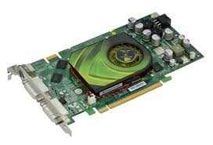

Grafikkort
Grafikkretsen har alltid funnits i datorer men dess betydelse har ändrats genom åren. I början var principen en renodlad digital-till-analog-konverterare (förkortas DAC). Alltså är dess uppgift att ta emot (ettor och nollor) och sedan tolka denna information för att göra det till vad vi ser på skärmen. Dagens grafikkort används för att vara en avlastare till processorn för att kunna vissa filmer i hög upplösning eller för att kunna spela 3D-spel. Den nu gällande anslutnings typen för grafikkort är PCI-express. Det man ska leta efter i ett grafikkort är hur mycket belastning det klarar av. Letar du efter ett grafikkort så kan du kolla in sidan nedan!
klicka på logan!